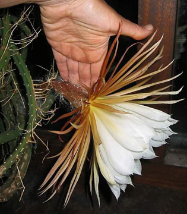

На фотографии справа цветок совсем не ослепительно белый, а кремовый. Но это не естественный его цвет, просто освещение ночью искусственное, вот и дает оно желтый оттенок на фотографии.
Фото слева: Вид на этот замечательный цветок сбоку, размер – 28 см (29 июня 2003 года, 2 часа ночи). Его аромат, как я обнаружил, исходит из желтой зоны между коричневыми чашелистиками и белыми лепестками.